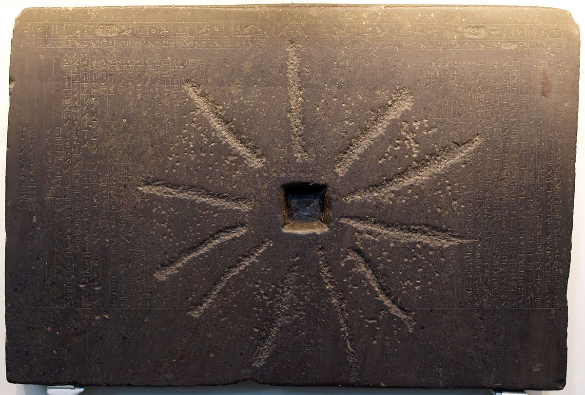
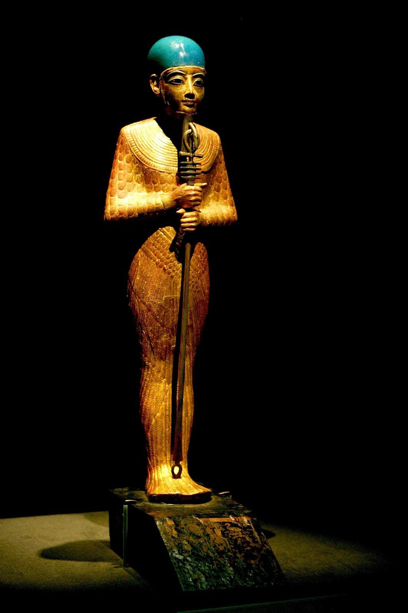

L’histoire du mythe de Memphis est singulière et passionnante. En 1805, le British Museum accueille dans sa collection égyptienne, une pierre rectangulaire, endommagée car ayant servi dans un meule à grains d’un paysan égyptien. Elle comporte 63 colonnes de textes finement gravés. Mais à cette date, personne ne savait lire les hiéroglyphes. Or, cette pierre comporte un texte religieux d’une exceptionnelle importance. Il s’agit de la théologie memphite racontant la création du monde selon la cosmogonie de Memphis, l’ancienne capitale située au sud du Caire moderne. Le monument date de la 25e dynastie et plus précisément du règne de Chabaka. Comme dans les autres mythes, le Verbe est au cœur de tout mais ici la parole matérialise ce qu’elle exprime.
Le démiurge de Memphis n’est ni Atoum, ni Thot, mais Ptah (« sculpteur de la terre », celui qui ouvre). « Ptah conçoit le monde par la pensée de son cœur et lui donne la vie par la magie de son Verbe ». Certains documents expliquent aussi que Ptah conçoit par la Pensée (représentée par Horus) et crée par la Parole (représentée par Thot).
